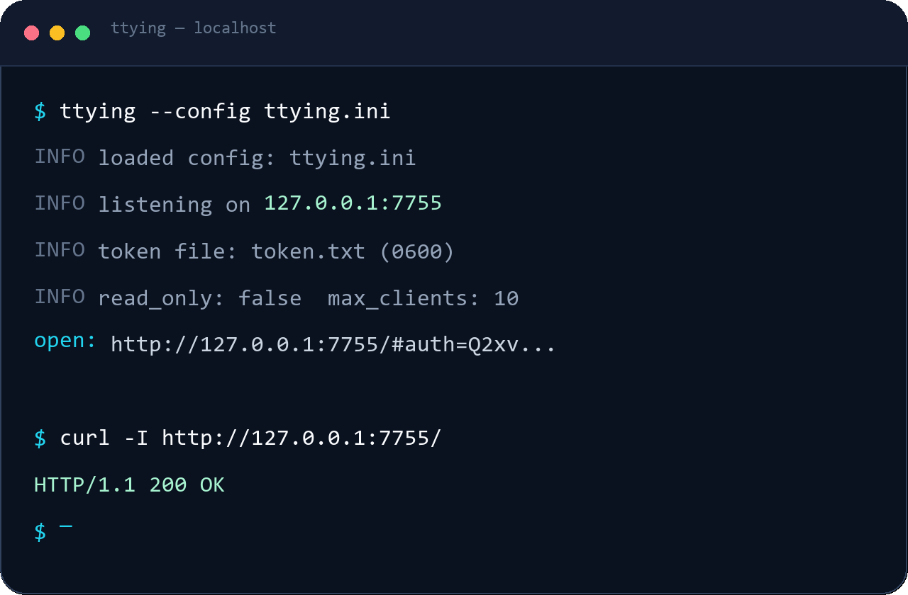
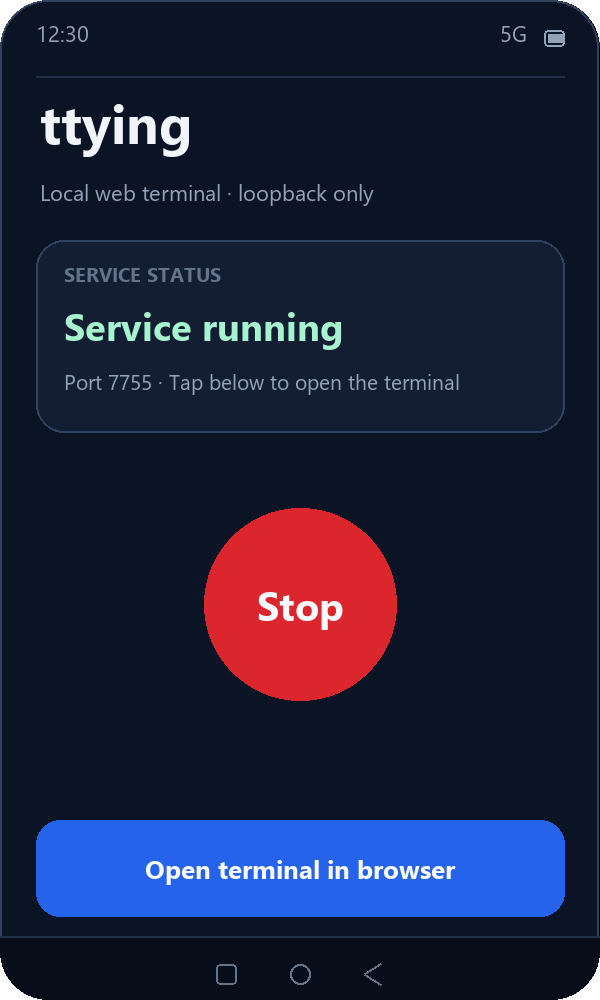

Your terminal,
in the browser.
A small, security-focused web terminal with persistent PTY sessions, token authentication, and a native Android control app.
One config file. One command.
Download a release, copy the INI example, and keep the service on loopback. Command-line flags override INI values; the default port is 7755.
Android falls back to an ephemeral port when 7755 is occupied. View all releases ↗
# download ttying-windows-x86_64.exe and ttying.ini.example
# edit ttying.ini, then run:
.\ttying.exe --config .\ttying.ini
# equivalent explicit command:
.\ttying.exe --token-file .\token.txt -W -- cmd.exe# download ttying-linux-x86_64 and ttying.ini.example
chmod +x ttying-linux-x86_64
./ttying-linux-x86_64 --config ./ttying.ini
# HTTPS proxy example:
./ttying-linux-x86_64 --token-file ./token.txt -W \
--secure-cookie --public-url https://tty.example.cn -- bash# download ttying-macos-arm64.tar.gz, then extract it
tar -xzf ttying-macos-arm64.tar.gz
./ttying --config ./ttying.ini
# equivalent explicit command (Apple silicon):
./ttying --token-file ./token.txt -W -- zsh# install the release APK
adb install -r ttying-android-arm64.apk
# then: open ttying → tap Start → Open terminal in browser
# native UI follows the system languageSmall surface. Serious behavior.
A focused Rust server and a browser terminal that behaves like a terminal, not a web form.
Persistent sessions
Refresh or reconnect within five minutes and return to the same shell. Sequence-numbered history replays output with explicit truncation notices.
Token-first authentication
Fragment bootstrap, HttpOnly SameSite cookie, Host and Origin checks, origin allow-list, and login rate limiting.
A real browser terminal
xterm.js with search, safe links, copy and paste, themes, font sizing, and a mobile key bar.
Four platforms, proxy ready
Windows, Linux, macOS arm64 and Android arm64. Cloudflare Tunnel and HTTPS proxies with Secure cookies and public URL bootstrap.
Command line and Android UI.
Real PTY output in the browser, plus a small native app to start and stop the service. The Android UI follows the system language.

Command-line startup
Start with --config; the printed access URL carries a fragment token. CLI logs are always in English.

Android control app
Start or stop the service, then open the terminal in the browser. Native UI in English.
Loopback by default.
The PTY session is the durable object; a WebSocket is only a view. Designed for a trusted reverse proxy or VPN.
-W flag.Use
--secure-cookie when TLS terminates at Cloudflare or another reverse proxy. Otherwise the browser sends an HTTPS Origin while the server expects HTTP, and the WebSocket may be rejected.Built with AI, reviewed as software.
An independent Rust implementation inspired by ttyd and other web terminal projects — not a fork of their source code.
Development disclosure
AI assisted with architecture, implementation, security review, tests, build automation, the Android UI, and documentation. The project owner provided requirements, product decisions, review, and test direction.
Recorded effort
According to project records, development consumed approximately 290 million tokens, at an approximate cost of CNY 10.
References: ttyd, ttyd-rs, ttyd-rs-wolegca, krust, termpair, sshx, webterm · BSD 3-Clause · Review the source and security notes before using ttying in a sensitive environment. Links and attribution are in the README.